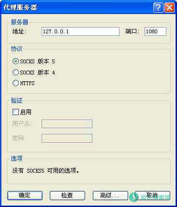
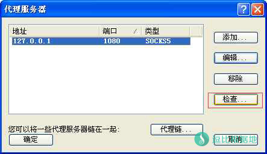
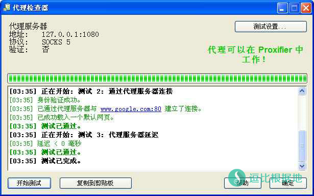
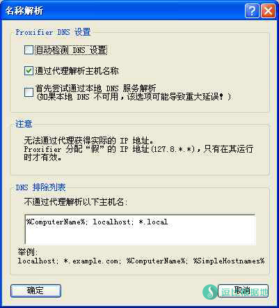
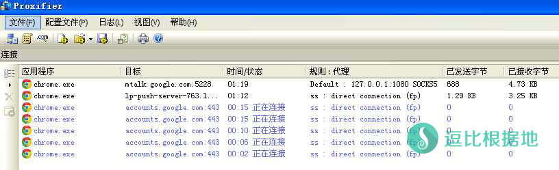

shadowsocks代理属于socks5代理，通俗的理解，socks5只是局部代理，不能像vpn那样把整个电脑都代理。因此，一般情况下只有支持socks5的软件才能使用shadowsocks代理。
我们使用的IE浏览器就不支持socks5代理，一般的游戏，也不支持socks5代理，那么这些软件如何使用代理？除了使用vpn，我们还有一种不错的办法，那就是把socks5代理转换成全局代理，效果跟vpn几乎一样。
推荐另一个代理转全局的软件：ShadowsocksR 转为类VPN的全局代理（代理软件/游戏）神器 — SSTAP
使用Proxifier把shadowsocks代理转全局代理，严重不建议小白使用，无基础的话会很纠结。
软件安装以后，即可运行。
首次使用，需要做一番设置才能用。
首先要设置代理服务器
菜单栏-->>配置文件-->>代理服务器，服务器地址填127.0.0.1，端口填是什么就填什么。

严重强调一下，这里的端口是本地端口，不是远程服务器端口，默认都是1080。
下面的“协议”选择socks版本5。
然后会弹出窗口，点“是”，然后就检查一下这个代理服务器是否能正常使用

点击检查，如果测试不通过，那就检查IP和端口。需要Shadowsocks启动系统代理。

此时还不能用，还需要两点非常重要的设置！，请睁大眼睛看...
开启远程dns解析
菜单栏-->>配置文件-->>名称解析-->>取消勾选 自动检测 DNS 设置-->>勾选 通过代理解析主机名称

如果不开启远程dns解析，你将会尽情享受到已被污染的dns解析，导致无法打开Facebook之类的网站。
如果你是游戏玩家，建议不要开启远程dns解析，你可以自己设置适合游戏服务器的dns，比如台服魔兽可以设置台湾dns。

出现这些就说明你成功了。
一定要注意以上两点，否则真心无法正常使用。
Proxifier设置好以后，就可以打开shadowsocks客户端并启动系统代理了(记得用PAC代理测试)。此时，默认所有程序的网络都会走代理，百度里查ip，必定会是代理的ip。
如果还上不去youtube，极有可能是因为有dns缓存，清空浏览器缓存即可。
如果这款软件不能满足你的需求，你可以试试：SocksCap64搭配Shadowsocks指定应用走Socks代理
文章转载自：http://boafanx.tabboa.com/77.boafanx
转载请超链接注明：逗比根据地 » 使用Proxifier把shadowsocks代理转为真·全局(类VPN)
责任声明：本站一切资源仅用作交流学习，请勿用作商业或违法行为！如造成任何后果，本站概不负责！

1.现在的情况是本地py程序可以和原本需要翻墙的网站连接，但proxifier里应用这一栏就是不显示正在使用SSR流量的程序。
2.而且我把proxifier代理规则里default的动作改成direct本地py程序居然还是能翻墙，全部都改成direct还是可以翻，搞得我开其他程序必须关掉SSR。
3.只开SSR不开proxifier，本地py程序还可以翻，绝了。
4.proxifier里如果SSR无限循环可以检测出，block动作也可以起作用